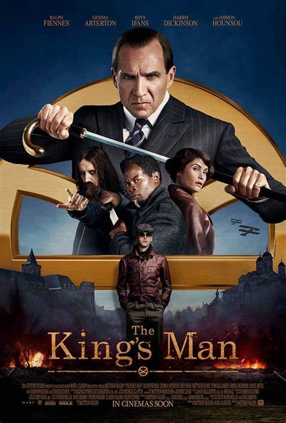

Najnowsze premiery w polskim i światowym kinie
GIEREK
- Reżyseria: Michał Węgrzyn
- Scenariusz: Michał Kalicki
- Gatunek: Biograficzny
- Kraj produkcji: Polska
- Premiera: styczeń 2022
- Fabuła: Historia życia Edwarda Gierka, I sekretarza KC PZPR w latach 1970–1980.
- Więcej: KLIK
HAZARDZISTA
- Reżyseria: Paul Schrader
- Scenariusz: Paul Schrader
- Gatunek: Thriller
- Kraj produkcji: Chiny, USA, UK
- Premiera: styczeń 2022
- Fabuła: William samotnie jeździ od kasyna do kasyna, nie ujawniając swojej tożsamości.
Gdy spotyka Cirka, który zna prawdę na temat jego przeszłości i chce by William pomógł
mu naprostować ich wspólne sprawy, mężczyzna zostaje zmuszony do podjęcia ryzykownej
akcji.
- Więcej: KLIK
KRZYK
- Reżyseria: Tyler Gillet
- Scenariusz: James Vanderbilt
- Gatunek: Horror
- Kraj produkcji: USA
- Premiera: styczeń 2022
- Fabuła: Młoda kobieta wraca do swojego rodzinnego miasta, żeby poznać przerażające
przypadki
morderstw związanych z zamaskowanym seryjnym mordercą.
- Więcej: KLIK

KING'S MAN: PIERWSZA MISJA
- Reżyseria: Matthew Vaughn
- Scenariusz: Matthew Vaughn
- Gatunek: Komedia sensacyjna
- Kraj produkcji: USA, UK
- Premiera: styczeń 2021
- Najgorsi tyrani i zbrodniarze w historii spiskują, by wywołać wojnę, której ofiarą padną
miliony ludzi.
Tylko jeden człowiek może ich powstrzymać, o ile zdąży.
- Więcej:
KLIK